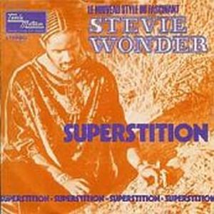

Canciones de amor, funky, melodías armoniosas, letras comprometidas, Talking Book es la MUSICA ELEVADA AL CUBO. Stevie Wonder puso ese título al álbum porque consideraba las canciones como capítulos de un libro que cuentan una historia completa. Es una joya de álbum que se vió recompensado con éxito de ventas, crítica y premios.
Aquí comienza una escalada en Grammys por canciones como "Superstition", originalmente escrito para el guitarrista de blues y rock inglés Jeff Beck, con un vibrante sonido funky, o "You are the sunshine of my life", un balada RnB compuesta dos años antes y que no publicó hasta conseguir el sonido deseado en su mente. Canciones que le llevarán los próximos años a acaparar los más importantes premios del mundo de la música.
Es el segundo disco de sus cinco álbumes del llamado "periodo clásico". Rompió el mito de que un artista de R&B no pudiera hacer música con capacidad para ser apreciada por una audiencia más rock. Más libre de ataduras de la Motown, colaboraron como músicos de estudio grandes artistas como Jeff Beck, Ray Parker. Jr y Buzzy Feton.
El álbum reune una buena selección de canciones románticas, de amor y desamor dedicadas a la por aquel momento esposa Syreeta Wright. Baladas llenas de edulcorantes letras y melodías como "You and I (We Can Conquer the World)",
"Blame It on the Sun", "Lookin' for Another Pure Love" o "I Believe (When I Fall In Love It Will Be Forever)", aderezadas con una producción y unas cualidades vocales de Stevie prodigiosas. Este último tema fue el cierre de los créditos finales de la película "Alta Fidelidad". Su extraordinaria forma de convertir lo carnal y humano en espiritual, y su maravillosa explosión gospel era toda una maravillosa forma de cerrar una obra de arte. Pero también, a parte del lado romántico, encontramos una vertiente de denuncia social que se verá más reforzada en álbumes posteriores. "Big Brother" denuncia la hipocresía de los políticos blancos que trataban de recaudar votos en los barrios negros. Nos advierte del peligro de las creencias irracionales por medio de "Superstition", una de las mejores canciones funky de todos los tiempos con un de los "grooves" más extraordinarios jamás construido. Fue un tema que Stevie Wonder compuso pensando en su amigo Jeff Beck, pero Berry Gordy percibió la grandiosidad del "hit" y le ordenó publicarlo en su álbum. El teclado (clavinet) utilizado como instrumento casi percusivo con unos arreglos de viento impresionantes, contagiaban un ritmo sin igual.
Un extraordinario e imprescindible álbum que la revista Rolling Stone en 1993 lo consideró como uno de los 100 mejores álbumes de la historia de la música.
